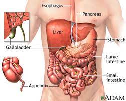

Stomach Ache
1.What is Stomach Pain?
Stomach pain is a feeling of discomfort and pain that occurs in the abdominal area that could be
sometimes mild or serious or both. Stomach pain is discomfort in the belly region. It can be continuous
or it may come and go.
2.What will you experience in stomach pain?
Stomach pain will vary to every individual. experience a persistent pain that could come and go from time to time
or could be continuing. Along with this primary pain there are certain other complications that may be felt are-
 Ayurveda for Stomach pain.
Stomach pain is called “Shoola” in Ayurveda that mainly occurs due to the vitiation of Vata Dosha balance. Stomach pain treatment with Ayurveda has been proven the most effective to get rid of this health issue as Ayurveda aims to eliminate the root of the disorder to provide relief to the patient. Additionally, it is free from chemicals and includes only natural substances.
Easy Home Remedies for Stomach pain
Pudina/ Mint
You can also chew a few raw leaves of mint or can make mint pastes (Pudina chutney) for umpteen issues like nausea, vomiting, acidity, and indigestion.
Ajwain/ Carom seeds
Lemon & Honey
Jeera/ Cumin
If your stomach hurts because of acidity/gas then you can simply take Cumin powder along with lukewarm water for instant relief.
Triphala
Hing/ Asafoetida
Saunf/ Fennel
How can you use it?
It is advised to take proper medical advice from a doctor or Ayurvedic practitioner regarding the dosage and usage of these herbs.